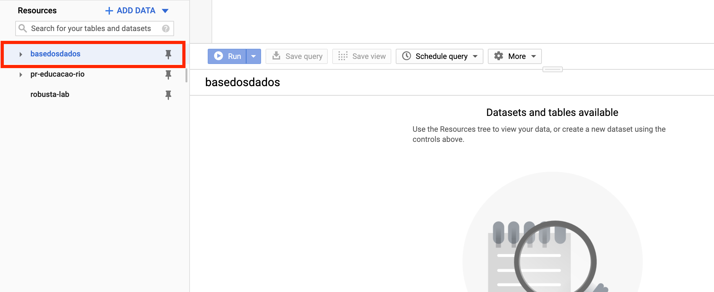
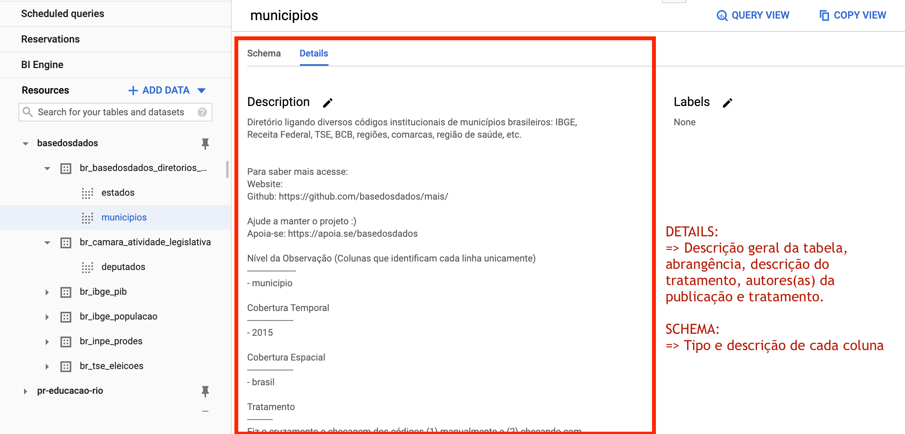

Como usar via BigQuery
Ao clicar no botão você será redirecionado para logar na sua conta ou criar uma antes de acessar o projeto.
Clique para acessar o projeto no BigQuery
Na sua tela deverá aparecer o projeto fixado no menu lateral esquerdo, como na imagem abaixo.

Criando uma conta no BigQuery
É preciso, basicamente, ter uma conta Google para acessar o BigQuery. O site deve solicitar que você crie um projeto qualquer no seu BigQuery antes de acessar os nossos dados - não se preocupe, não é pago!
O BigQuery inicia automaticamente no modo Sandbox, que permite você utilizar seus recursos sem adicionar um modo de pagamento. Leia mais sobre o Sandbox aqui.
Acessando o projeto
Dentro do projeto existem dois níveis de organização, datasets (conjuntos de dados) e tables (tabelas), nos quais:
- Todas as tables estão organizadas em datasets
- Cada table pertence a um único dataset

Caso não apareçam as tabelas nos datasets do projeto na 1ª vez que você acessar, atualize a página.
Explorando os dados
Exemplo: Qual a evolução do PIB per capita de todos os municípios? 📈
O BigQuery utiliza SQL como linguagem nativa. Leia mais sobre a sintaxe utilizada aqui.
Rode a query abaixo no Query Editor/Editor de consultas e obtenha o cruzamento
das tabelas de população e PIB do IBGE com o resultado anual desde 1991.
SELECT
pib.id_municipio,
pop.ano,
pib.PIB / pop.populacao * 1000 AS pib_per_capita
FROM `basedosdados.br_ibge_pib.municipios` AS pib
JOIN `basedosdados.br_ibge_populacao.municipios` AS pop
ON pib.id_municipio = pop.id_municipio AND pib.ano = pop.ano
Dica
Clicando no botão 🔍 Consultar tabela/Query View, o BigQuery cria
automaticamente a estrutura básica da sua query em Query Editor/Editor
de consultas - basta você completar com os campos e filtros que achar necessários.
Entenda os dados
O BigQuery possui já um mecanismo de busca que permite buscar por nomes de datasets (conjuntos), tables (tabelas) ou labels (grupos). Construímos regras de nomeação simples e práticas para facilitar sua busca - veja mais na seção de Nomenclatura.
Metadados
Clicando num dataset ou table você já consegue ver toda a estrutura e descrição das colunas, e pode acessar também os detalhes de tratamento e publicação, para entender melhor os dados.
